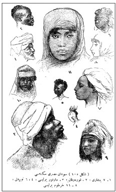

Popülizm ana hatlarıyla 19. yüzyılın ikinci yarısında doğmuştu. Aynı yıllar sosyolojinin de doğuş sancıları çektiği bir evreydi.3219. yüzyılın ikinci yarısı gelişmiş Batı ülkelerinin, Sanayi Devrimi’nin ve Fransız Devrimi’nin doğurduğu sorunlarla bocaladığı bir evreydi. Gerek popülizm, gerekse sosyoloji bu tür sorunlar yumağının ürünüydü. Bir anlamda popülizm ile sosyoloji arasında yakın bir bağ vardı. Toplumsal dengesizlikler, sınıfsal sorunlar her iki anlayışın da doğuşunda önemli roller üstlenmişti.
Etnografyaya Giriş
Sosyoloji Osmanlı aydın çevrelerinde II. Meşrutiyet yıllarında yer etti. Ama sosyolojinin Batı’dakine benzer bir biçimde bir önceli vardı. Bu da antropolojik bilgiydi. Antropoloji Batı’da insan bilimlerinin ilk nüvesiydi. Sosyal ve beşeri bilimlerin yeşermesinde Avrupalı gezginlerin başka kıtaları keşiflerinin ve görünüşü farklı insan topluluklarıyla tanışmalarının rolü büyüktü. Bu arada Darwin’le birlikte sosyal ve beşeri bilimlerde “uhrevî” olandan “dünyevî” alana kesin bir geçiş gerçekleşmişti. Osmanlı’da da benzer bir dönüşüm 19. yüzyılın ikinci yarısında gözlemlendi. Yüzyılın ortalarında Münif Paşa’nın başını çektiği Mecmua-i Fünun’da Batı’dan öykünülerek insanın evrimi ele alınıyordu.
Böylece, II. Meşrutiyet öncesi insan bilimine ya da antropolojik bilgilere yönelik bir yayın dünyası oluşmuştu. Dinsel nedenle son derece temkinli olunan bu alanda başta Beşir Fuad olmak üzere Şemseddin Sami ve Ebüzziya Tevfik söz sahibiydiler. O devirde yayımlanan cep kitapları Batı kaynaklı genel kültüre yönelik zengin bir birikim içeriyordu. Ahmed Midhat’ın cep kitapları, Asır Kütüphanesi, Ebuzziya Tevfik’in Kitabhane-i Meşâhir dizisi, Cep Kütüphanesi bu diziler arasında öne çıkıyordu. Özellikle Kitabhane-i Meşâhir dizisi geniş bir yelpaze oluşturuyordu. Gutenberg ve İhtira’-i Fenn-i Tab’, Galile, Diyojen, Benjamin Franklin, Özop, Jean-Jacques Rousseau, İbn-i Sina bu dizide yer alan kitaplar arasındaydı. Antropoloji açısından önem taşıyan ise Buffon adlı eserdi. Kitabhane-i Meşâhir’in yedinci kitabını oluşturan Buffon, Ebuzziya Tevfik tarafından kaleme alınmıştı.33
Şemseddin Sami İnsan adlı risalesinde ilk insanın evrimini
“ilmü’l-arz” yani jeoloji bağlamında ele alıyordu.
Yine İnsan’da ise biyolojiye, “tarih-i tabii”ye yer veriyordu. Her ikisinin
karışımı “ilmü’l-beşer” yani antropoloji idi.
Comte de Buffon’un çalışmaları 19. yüzyıl antropolojik bilgi birikiminin geri planını oluşturuyordu. Ebuzziya Tevfik’e göre Buffon Osmanlı topraklarında çok daha erken bir dönemde biliniyordu. Kitapta “Buffon bizce dahi marufdur. Çünkü eşher-i âsarı [en ünlü eseri] olan tarih-i tabiîsi bundan seksen sene mukaddem Türkçemize tercüme edilmiş ve binaenaleyh mahsul-i tetebbuatından milletimiz dahi müstefid olmuş ise de şimdiye kadar güzerân hayatına [gelip geçici hayatına] dair hiçbir yerde topluca malumât verilmemiştir” deniyor ve Buffon’un hayatı ve “âlem-i insaniyyet”e yaptığı hizmetler sayılıyordu.
Ebüzziya Tevfik’in sözünü ettiği metin III. Selim’in başhekimi olan Behçet Efendi’nin çevirisiydi ve altmış beş yıl sonra Tasvir-i Efkâr gazetesinde tefrika edilmişti. Ebüzziya Tevfik’in basit bir dille Buffon’un hayatı ve eserlerini özetleyen kitabı şu satırlarla son buluyordu: “Bahusus seksen senelik bir ömür içinde birkaç asırlık ömrün kifayet edemeyeceği tetkikât-i hekîmâneyi şâmil 40 aded cild-i kebirden ibaret bir telif-i mükemmel vücude getirmiştir.” Böylece erken dönem antropoloji literatürünün ünlü bir şahsiyeti Kitabhane-i Meşâhir sayesinde Osmanlı okuruna tanıtılmış oluyordu.
Ancak 19. yüzyıl Osmanlı antropolojik bilgi birikimine iki risale ile katkıda bulunmuştu. Bunlar 1296 (1880) tarihli İnsan34 ve 1303 (1887) tarihli Yine İnsan35 adlı eserleriydi. Bu eserlerden ilki insanın evrimini “ilmü’l-arz” yani jeoloji bağlamında ele alıyor ve yeryüzünün geçirdiği devirleri sıralıyordu. İnsanoğlunun, “nev’-i beşer”in yeryüzünde ortaya çıkışından ve ilkel insanların yaşamlarından söz ediyordu. Yine İnsan adlı eserde ise Şemseddin Sami, Osmanlı literatüründe ilk kez biyolojiye, “tarih-i tabii”ye yer veriyordu. Her ikisinin karışımından ise ortaya Osmanlıcaya “ilmü’l-beşer” diye çevirdiği antropoloji bilimi çıkıyordu.
Yine İnsan şu bölümlerden oluşuyordu: Bahsimiz; Bu bahsin yeniliği; Nev’-i beşer [İnsan türü]; Nev’-i beşerin birliği [İnsan türünün birliği]; İnsanın nesil ve nesebi; İnsanın ebeveyni [İnsanın ataları]; Nev’-i beşerin mahall-i zuhuru [İnsan türünün doğduğu yer]; Nev’-i beşerin berren suret-i intişarı [İnsan türünün karada ortaya çıkışı]; Nev’-i beşerin bahren suret-i intişarı [İnsan türünün denizde ortaya çıkışı]; İhtilâf-ı suver [Sûretler ya da insan türlerinde farklılıklar]; Tağyîrin husulü [Değişimin, başkalaşmanın oluşması]; Renk tağyîriyle şekil ve sima tehâlüfü [Renk değişimiyle şekil ve sima zıtlığı]; Tefrik-i ecnâs [Cinslerin ya da türlerin farklılaşması]; Ecnâs-ı hamsenin mevâki’i [Beş ırkın mevkileri]; Saç; Kafa; Çeneler ve Yüz; Aza-i beden [Beden organları]; Hesabâtça ve fiziyolociya nokta-i nazarından ecnâs beynindeki fark [Hesapça ve fizyoloji açılarından cinsler arasındaki fark]; Tehalüf-i taayyüş ve medeniyet [Yaşam değişiklikleri ve uygarlık]; Ecnâs-ı beşer beynindeki fark-ı istidâd [İnsan cinsleri arasındaki yetenek farkı]; Terakki-i akılla tekemmül-i şekil [Aklın gelişimiyle şeklin olgunlaşması]; Kadim ecnâs [Eski cinsler ya da türler]; İhtilât-ı Ecnâs [Cinslerin karışımı]; Ahlak ve Adât ve Edyân [Ahlak ve âdetler ve dinler]; Kafkas cinsi; Moğol cinsi; Zenci cinsi; Amerika cinsi; Malayi cinsi.
Şemseddin Sami ve Antropoloji
Şemseddin Sami’nin geniş bir genel kültürü vardı. Ansiklopedi ve sözlük çalışmaları bunu kanıtlıyordu. Hemen her alanda kalem oynatacak bir birikime sahipti. Nitekim bu iki kitap da onun Batı’yı ne denli yakından izlediğinin kanıtlarıydı. O tarihlerde antropoloji bilimsel gelişiminin ilk evresindeydi. Şemseddin Sami bunu görmüş ve genel çizgileriyle antropolojiyi Osmanlı okuruna ulaştırmayı görev bilmişti.
Yine İnsan’da antropolojide mevcut ya da yok olmuş “ümem” yani ümmetler ve “akvâm” yani kavimlerin şekil ve suretleriyle kafa kemikleri ve diğer uzuvları karşılaştırılıyordu. Bu arada insan türleri ya da “nev’-i beşer” bölümünde insanın hayvan türlerinden biri olduğunu söylemenin cesaret işi olduğu kaydediliyordu. “Nev’-i Beşerin Birliği” bölümünde yeryüzüne yayılmış insanlar birbirinden “gerek kabiliyet ve istidatça ve gerek şekil ve suret ve renkçe” farklı olduklarından antropolojide insanların bir tek “nev’”den, ya da türden ortaya çıkıp çıkmadığının tartışıldığı belirtiliyordu. Bu Âdem-Havva kurgusunun sorgulanabileceği anlamına geliyordu. Şemseddin Sami bu konuda dinî vecibelerden uzaklaşmaktan çekiniyor ve insanların bir tek “türe” “nev’-i vâhid”e mensup olduklarını söylüyordu. Aralarındaki fark ancak “ecnas”la yani cinslerle, ikinci derecede farklılıklarla açıklanabilirdi. Bölüm şu satırlarla son buluyordu: “Diyoruz ki: Bütün insanlar enva’-i hayvanattan bir nev’-i vâhid [tek bir tür] teşkil ediyorlar, ki o da enva’-i saire [diğer türler] gibi, ecnâs-ı muhtelifeye münkasimdir [farklı cinslere ayrılmıştır].”
Şemseddin Sami “insanın nesil ve nesebi” bahsinde ise agnostik olmayı yeğliyor, ispatı mümkün olmayan faraziyelerle uğraşmaktan kaçınıyordu. İnsan adlı eserinde olduğu gibi, Yine İnsan’da da insanın yaratılışı konusuna girmeyi uygun görmüyordu. Ancak bu konunun o gün için bir “muamma” olmaktan kurtulamamış olduğunu belirtiyordu.36Böylece Yine İnsan monojenizm ve polijenizm konularını ele almış oluyordu. İlk önce bir çift insanın oluşumu, ya da yaratılışı ve onların zürriyetinin yeryüzüne dağılımı monojenizmi oluşturuyordu. Dünyanın değişik yörelerinde insanların türeyip her cinsin kendine mahsus bir Âdem ve Havva’sının olması ise polijenizmdi. Şemseddin Sami tercihini monojenizmden yana koyuyor, “biz dahi bu risalede insanların bir çiftten yani bir babadan bir anadan mütevellid olup, muahharen [sonradan] ecnâs-ı muhtelife [değişik cinslere] ayrılmış bir nev’-i vâhid [tek tür] teşkil ettikleri ihtimalini kabul ve iltizam edeceğiz” diyordu.
Şemseddin Sami’nin diğer bir merakı insanoğlunun doğduğu tarih ve yerdi. Bu konudaki bilgiler henüz yeterince açıklığa kavuşmamıştı. Ama yine de Şemseddin Sami kutsal kitaplardan bir ölçüde ayrılıyor, “Mebde-i zuhurumuz[un] öyle zannolunduğu gibi, birkaç bin senelik bir iş olmayıp belki binlerce asırlar evvel vuku’ bulmuş olduğunu” kaydediyordu. Tabii bu tür bir anlayış kutsal kitaplara ters düşüyordu. Yer konusunda ise “Mademki alelumum insanların ilk yaratılan bir çift insandan müteselsilen olduklarını kabul ettik, o çift nerede zuhur etmiş ve insanlar ibtida küre-i arzın hangi tarafında sakin bulunmuşlar?” sorusuna ise “fen bu suale kat’i bir cevap vermekten âcizdir” cevabını veriyordu. Ancak, bu konuda “uhrevî” alandan çıkmaya çekiniyor ve “tevârih-i kadime ve kütüb-i mukaddese, nev’-i beşerin beşiği olmak üzere, Hindistan taraflarını kabul etmiş oldukları gibi, ilmü’l-beşer âlimlerinin bir takımı da ilk peder ve validemizin Hindistan ile Çin ve Türkistan arasında Billûr dağını göstermişlerdir” diyordu. O tarihteki ilkçağ üzerine yazılmış Osmanlı tarih kitapları da Âdem ve Havva ile ilgili benzer hurafelere yer veriyordu.37Şemseddin Sami’nin “ilmü’l-beşer”i uhrevî nitelikleri ağır basan, agnostik bir antropolojiydi. O günlerde Batı’daki antropolojik gelişmelere ilgi duymuş, popüler bir üslupla antropolojiyi Osmanlı literatürüne sokmuştu.
Sâtı Bey 1912 yılında yayımladığı Mebâdi-i Ulum-ı
Tabiiyyeden Tarih-i Tabiiyye ve Tatbikatı başlıklı
eseriyle bu kez jeolojide ve biyolojide güncel bilimi
Osmanlı topraklarına getiriyordu.
Yine İnsan’ın en ilginç konularından biri 16. bölüm olan “Kafa” idi. Cumhuriyet antropolojisinin omurgasını oluşturacak olan kafa endeksi daha 19. yüzyılın son çeyreğinde, Şemseddin Sami sayesinde Osmanlı’da literatüre girmişti. “İnsanlar esasen iki cinse taksim olunurlar: Biri tavîlü’r-re’s [uzun kafa] (Dolichocéphale) ve diğeri kasîrü’r-re’s [kısa kafa] (Brachycéphale)”dir diyordu. “Tavîlü’r-re’s” olanların kafası önden arkaya doğru uzun, alınlarından enselerine kadar olan mesafeleri bir şakaktan diğer şakağa kadar olan mesafelerden çok daha fazlaydı. “Kasîrü’r-re’s” olanlarda ise bu iki mesafe arasında büyük bir fark yoktu. Genellikle zenciler dolikosefal, Moğollar brakisefaldi. Kafkas ve diğer “cins” insanlar bu iki uç arasında yer alıyordu. O tarihlerde Osmanlıcada ırk sözcüğü henüz oluşmamıştı. Irk sözcüğü II. Meşrutiyet’le birlikte yaygın kullanım alanı bulacaktı. İlk evrede insan ırkı için kullanılan sözcük “cins”ti. “Ecnâs-ı beşer” insan cinsleri ya da türleri anlamına geliyordu.
Abdullah Cevdet’in Fizyolociya ve Hıfzı’s-sıhhat-ı Dimağ ve
Melekât-ı Akliye adlı eserinde başvurduğu yazarlardan biri
Gustave le Bon’du. Son dönem Osmanlı entelektüel dünyası
le Bon’u yakından izlemişti.
Kısaca 19. yüzyılın son çeyreğinde Osmanlı aydını antropoloji literatürüyle tanışmış oluyordu. Ebüzziya Tevfik’in Buffon’u tanıtıcı kitabının yayın tarihi Şemseddin Sami’nin İnsan ve Yine İnsan kitaplarının arasında yer alıyordu. Her üç kitap 19. yüzyıl proto-antropolojisine örnek sayılabilirdi. 19. yüzyılın son yıllarında antropolojiye eğilen bir diğer yazar Abdullah Cevdet’ti. Abdullah Cevdet’in 1898’de yayımladığı Fizyolociya ve Hıfzı’s-sıhhat-ı Dimağ ve Melekât-ı Akliye adlı eseri38 antropolojiye geniş yer veriyordu. Bu kitap daha kapsamlı bir biçimde 1917 yılında yeniden basılacaktı. İlk baskısı [232 sayfa] 1896 yılında çıkmıştı ve büyük ölçüde Guyot-Daubès’ten yapılan bir çeviriydi.39Abdullah Cevdet ilk baskıda şu satırlara yer vermekteydi: “Bu eser esasen Fransa erbâb-ı ilminden Guyau-Dobés’in Physiologie et Hygiène du cerveau unvanlı cevherîn kitabının adeta tercüme-i kâmilesi olub bazı mütalaat-ı zatiyyemizden maada Feuchtersleberg, Doktor Paul Hahn, Marie Guyau, Doktor Maudsley, Dr. Paul E. Levy, Doktor Charles Féré, Herbert Spencer, Gustave le Bon gibi ruhiyyat ve terbiyye ile ilmî ve amelî iştigalde bulunmuş zevâtın eserlerinden birçok malumât iktibas edilmiştir. 4 Temmuz 1310.” Maarif-i Umumiyye Nezareti Talim ve Terbiye Kütüphanesi’nce yayımlanan ikinci baskısının Osmanlıca başlığında ufak bir fark vardı. Böylece Dimağ ve Melekât-ı Akliyyenin Fizyolociya ve Hıfzı’s-sıhhası40 “antropolociya”ya yer veren bir diğer kitap oluyordu. Kitap, bu arada 19. yüzyılda ünlemiş olan Broca ile Topinard’ın beyin ölçümlerini ele alıyor ve bu şahısların “antropolociya laboratuvarı”ndan söz ediyordu.
Antropoloji II. Meşrutiyet yıllarında daha geniş bir okur kitlesine ulaştı. Avanzade Mehmed Süleyman’ın 1916’da yayımlanan Ulum-ı Hafiyyeden Musavver ve Mükemmel Kıyafetname adlı eseri Meşrutiyet yıllarında antropolojiden söz eden bir başka kitaptı.41Bu kitapta da ırk teorileri gündeme geliyor, kafa ölçüsü, beynin ağırlığı, zekâ ile beynin ilişkisi değerlendiriliyordu. Kıyafetname’nin bir diğer özelliği kafa ölçüleri ile Osmanlı İmparatorluğu’nda kadın sorunu arasında ilişki kurmasıydı. Kitapta bir yandan, siyah ve sarı ırk, zenciler, Eskimolar, Çinliler, Avustralya yerlileri kafa ağırlıklarıyla Batılıların gerisinde yer alıyor, diğer yandan aynı ölçümler kanıt gösterilerek kadının erkekten daha aşağı bir mahluk olduğu “ispat” ediliyordu. Böylece bir tür toplumsal cinsiyet ırkçılığına kapı aralanıyordu.
Mülkiye ve Sosyal Bilimler
Yunanca ethnos (insanlar) ile graphein (yazım) sözcüklerinin birleşmesinden oluşan etnografya tıpkı antropoloji gibi Avrupalıların yeni coğrafyalara ulaşarak kaleme aldıkları gezi notları ve düzenledikleri raporların bir ürünüydü. İnsan topluluklarının değişik zaman ve mekânlarda doğaya hâkim olmak ve sosyal ihtiyaçlarını karşılamak için sarf ettikleri gayretlerin sonucunda ortaya çıkan maddi ve manevi kültürlerini inceliyordu. Maddi kültürler, giyim, süs eşyası, ev aletleri, avcılık, yapı maddeleri, tarım aletleri, halk sanatlarına ait aletler, yayık veya beşiğin yapılışı etnografyanın odaklandığı konulardı.
Başlangıçta kavim, kabile, aşiret gibi insan topluluklarını ele alan etnografya zamanla “ulusal” boyutlara taşındı. Terim olarak 19. yüzyıl başında ortaya çıkan etnografya önce insan topluluklarının konuştukları dilleri kuşatmış, giderek evrilerek 20. yüzyılda maddi kültürün değişik alanlarını kapsamıştı. Bu konuda Osmanlı’da yayımlanan dergiler de etnografyaya katkıda bulunmuştu. 19. yüzyılda Servet-i Fünûn başta olmak üzere birçok dergi, farklı coğrafyalarda yaşayan insan örneklerine yer vermişti. Ancak bir bilim dalı olarak etnografya II. Meşrutiyet yıllarında önem kazandı. Etnografyanın, karşılığı Osmanlı dergilerinde “ilm-i akvâm”, “kavmiyyet”, “akvamiyyet”, “tasvir-i akvam” olarak geçmişti. En sonunda “kavmiyyat”ta karar kılındı. “Kavimlerin ilmi” toplumsal grupların yaşamını değişik yönleriyle yerinde inceleyen bilim dalı oldu; toplumdaki akrabalık ilişkilerinin yanı sıra iktisat, siyaset, dil, ekoloji ve daha nice alana eğildi. Öncelikle etnografya sömürgecilik döneminde Avrupa’nın dış dünyaya ya da “öteki” dünyaya bakışıyla bağlantılıydı. İkinci Dünya Savaşı ertesi sömürgeciliğin sona ermesiyle içe dönük bir nitelik kazandı. Ülkeler kendi toplumlarındaki kırsal ve kentsel yapılara odaklandılar.
1908 Jön Türk Devrimi Osmanlı toplumunu derinden etkileyen gelişmelere neden olmuştu. Eğitim sistemi de bundan nasibini almıştı. Jön Türk hareketinde önemli rol oynayan yüksekokullardan biri kuşkusuz Mekteb-i Mülkiye-i Şahane idi. Her ne kadar Abdülhamid döneminde geçirdiği reform sonucu köklü dönüşümlere uğramış, bir yüksek eğitim kurumuna dönüşmüşse de kısa bir süre sonra muhalefet yuvalarından biri olarak ün saldı. Tıbbiye ve Harbiye’de olduğu gibi Batı bilimlerinde eğitim görmek, Batı dillerini, özellikle Fransızcayı öğrenmek, aydın kimliğini benimsemek Mülkiye Mektebi öğrencileri ve mezunlarının Jön Türk hareketi içerisinde yer almalarına neden olmuştu.
Mekteb-i Mülkiye, etnografya muallimi Sâtı Bey’in ders notlarını önce taşbaskı olarak
bastı. Ardından Sâtı Bey, bu ders notlarını resimlerle süsleyerek Etnografya-İlm-i Akvam
başlığı altında yayımladı.
Tanzimat sonrası Osmanlı İmparatorluğu’nda sosyal ve beşeri bilimin eğitim alanında başlangıcı Mekteb-i Mülkiye sayılabilirdi. Batı tarzı tarih, iktisat, coğrafya, kuruluşu ertesi Mülkiye’de ders olarak okutuldu. Mülkiye’nin yüksekokul oluşuyla birlikte müfredata “antropoloji” de eklendi.42O sırada antropolojik bilgi ile etnografya iç içeydi. O nedenle ders programlarında etnografya adıyla yer aldı. İlk etnografya deneyimi kısa ömürlü olduysa da 1908 Devrimi’yle birlikte bir kez daha gündeme geldi. Nitekim 1908-1909 ders yılında Mekteb-i Mülkiye, etnografya muallimi Sâtı Bey’in ders notlarını önce taşbaskı olarak bastı. Ardından Sâtı Bey, bu ders notlarını resimlerle süsleyerek Etnografya-İlm-i Akvam başlığı altında yayımladı.
Mülkiye’nin yüksekokul oluşuyla birlikte müfredata “antropoloji” de eklendi. O sırada antropolojik
bilgi ile etnografya iç içeydi. O nedenle ders programlarında etnografya adıyla yer aldı.
Jön Türk Devrimi ertesi ders programlarında köklü bir dönüşüme giden kurumların başında Mekteb-i Mülkiye vardı. Mülkiye’nin yeni programı çağdaş bir görünüm kazanmıştı. Yine devrim ertesi Mülkiye mezunları, Osmanlı’da ilk öğrenci derneklerinden birini kurdular ve otuz sayı devam edecek bir fikir dergisini, Mülkiye’yi çıkardılar. Mekteb-i Mülkiye Mezunları İttihad ve Teavün Cemiyeti tarafından 1 Şubat 1324 / 14 Şubat 1909’dan itibaren yayımlanan bu dergi, o günlerde yayımlanan Ulum-ı İktisadiyye ve İctimaiyye Mecmuası ile birlikte 1908 Devrimi’nin fikir tabanını yansıtan ender yayın organlarından biri oldu. Derginin yönetimini Ali Reşad, Hasan Tahsin, Ali Seydi, Hakkı Behiç üstlenmişlerdi. Derginin ilk sayılarında yer alan yazarlara bakıldığında, Meşrutiyet dönemi fikir dünyasının önde gelen bu şahsiyetlerinin önemli bir kısmının Mülkiye mezunu oldukları görüldü. Bu dergi sayesinde müfredat programındaki değişiklikler yakından izlenebilmiş, “ittihad” ve “terakki” sözcüklerinin Mülkiye çevresince temel şiar edinildiği görülmüştü. Böylece ülkede çağdaş bir eğitim anlayışının benimsenme çabası Mülkiye Mektebi müfredatına da yansımış oluyordu. Nitekim Mülkiye dergisinde program değişikliğiyle ilgili olarak şu satırlar yer alıyordu: “1324-1325 sene-i dersiyyesinde ise saye-i feyyaz-ı hürriyette programlar menâfi-i memlekete muvafık surette yeniden tertib ve Paris Mekteb-i Siyasî cetvel-i dürûsuna [ders programına] takrib olunarak şu surette kararlaştırılmıştır.”43Böylece Mülkiye Mektebi’nde Paris Siyasal Bilgiler Okulu örnek alınmış ve programı ona göre düzenlemiş oluyordu.
Mülkiye’nin birinci sınıf derslerine göz atmak bile bu köklü değişikliği ortaya koyuyordu: Mülkiye’ye giren öğrencinin karşılaştığı ilk dersler şunlardı: Hikmet-i Hukuk-ı İslamiyye, Mecelle-i Ahkâm-ı Adliyye, Usul-i İdare, İlm-i İktisad, Usul-i Maliyye, İngiltere ve Fransa ve Amerika Kanun-ı Esasîlerinin Tarihçesi, Devlet-i Âliyye Tarih-i Siyasî ve İdarîsi, Tarih-i Siyasî [1763-1789’a kadar], Coğrafya-i İktisadî, Etnografya, İstatistik, Mebadî-i İlm-i Hukuk ve Fransızca.
Mülkiye aslında 1859’da bir “idadî” yani kabaca lise düzeyinde bir okul olarak kurulmuştu. Abdülhamid devrinde yüksek kısmı da eklenerek yedi yıllık bir okula dönüşmüştü. 1900 yılında Mülkiye’nin idari kısmı yüksek kısmından ayrılmış, Mülkiye üç yıllık yüksek kısmıyla devam etmişti. Mülkiye’nin 1908 sonrası ders programını, 1908 öncesinin son programıyla karşılaştırmak değişimi görmek için yeterliydi. 1908 öncesinin ders programı 1900 tarihinde yürürlüğe konulmuştu. 1900 programına göre Mülkiye birinci sınıfı öğrencileri şu dersleri görüyorlardı: İlm-i Kelâm ve Tefsir ve Hadis, Usul-i Fıkıh, İlm-i Ahlak, İlm-i Servet, Usul-i İdare, Usul-i Maliyye, Arazi Kanunu, Hukuk-ı Düvel, Kitabet-i Resmiyye, Tarih-i Osmanî, Fransızca, Usul-i Tercüme, Elsine-i Erbaa [Dört dil: Arapça, Ermenice, Rumca, Bulgarca]. 1903 yılında Hüsn-i Hatt dersi eklenmiş ve 1908’e kadar program bu derslerden oluşmuştu. Okul mezunlarının yayımladığı Mülkiye dergisi “istibdat” dönemini eleştiriyor ve Abdülhamid döneminde Mülkiye’de okutulan derslerin tutarsızlığını ele alıyordu. Mekteb-i Mülkiye-i Şahane Abdülhamid döneminde karanlığa gömülmüş, sultana biat edecek öğrenci yetiştirmenin ötesinde bir işlevden yoksun kalmıştı.44
1908 ile birlikte ders programlarında köklü bir değişikliğe gidilmiş ve şer’i hukuka ve dine yönelik dersler azaltılarak doğrudan doğruya yöneticilik ile gerekli diğer derslere ağırlık verilmişti. Nitekim, ikinci ve üçüncü sınıflara da birinci sınıfınkilere benzer dersler konulmuştu. İkinci sınıfta okutulan dersler şunlardı: Hikmet-i Hukuk-ı İslamiyye, Mecelle-i Ahkâm-ı Adliyye, Usul-i İdare, İlm-i İktisat, Usul-i Maliyye, Edebiyat-ı Osmaniyye, Hukuk-ı Hususiyye-i Düvel, Devlet-i Âliyye Tarih-i Siyasî ve İdarîsi, Tarih-i Siyasî [1789-1814’e kadar], Kavanîn-i Ticariyye, Arazi Kanunu, Hukuk-ı Esasiyye ve Umumiyye, Hukuk-ı Düvel, Fransızca. Mülkiye’nin son sınıfı müfredatı ise şu derslerden oluşuyordu: Hikmet-i Hukuk-ı İslamiyye, Mecelle-i Ahkâm-ı Adliyye, Usul-i İdare, İlm-i İktisad, Usul-i Maliyye, Edebiyat-ı Osmaniyye, Hukuk-ı Hususiyye-i Düvel, Devlet-i Âliyye Tarih-i Siyasî ve İdarîsi, Hukuk-ı Esasiyye ve Umumiyye, Hukuk-ı Düvel, Fransızca mükâtibât-ı düvelliyye [devletlerarası yazışma-diplomatik muhaberât], mükâtibât-ı resmiyye [resmi yazışma], Fransızca, Tarih-i Siyasî [1814’ten zamanımıza kadar].
1908 öncesi ise ikinci ve üçüncü sınıflarda şu dersler okutuluyordu: İkinci sınıf: İlim-i Kelâm ve Tefsir ve Hadis, Usul-i Fıkıh, Mecelle, İlm-i Ahlak, İlm-i Servet, Usul-i idare, Usul-i Maliyye, Hukuk-ı Ticaret, Hukuk-ı Düvel, Hukuk-ı Ceza, Kitab-ı Resmiyye, Tarih-i Osmanî, Fransızca, Usul-i Tercüme, Elsine-i Erbaa. Üçüncü sınıf: İlm-i Kelâm ve Tefsir ve Hadis, Mecelle, İlm-i Servet, Usul-i İdare, Usul-i Maliyye, Ahkâm-ı Evkaf, Hukuk-ı Düvel, Usul-i Muhakemât-ı Hukukiyye, Usul-i Muhakemât-ı Cezaiyye, Tarih-i Osmanî, Nizamât-ı Zabtiyye, Fransızca, Usul-i Tercüme, Elsine-i Erbaa.
1908 öncesi ve sonrası Mülkiye Mektebi’nin ders programları karşılaştırıldığında belli başlı değişiklikler şunlardı: Yeni programda Mülkiye dergisinin vurguladığı gibi Paris Siyasal Bilgiler Okulu’nun etkisi büyüktü. Programda öncelikle din ağırlıklı dersler azaltılmış ve daha lâ-dinî ya da seküler yapı hâkim olmuştu. Nitekim Mülkiye dergisi 1908 öncesi programını eleştirirken Mülkiye mezunlarının vaiz olmayacaklarını, bu denli yüklü bir din eğitimi görmelerinin gereksiz olduğunu vurguluyordu. Yeni programda İlm-i Kelâm ve Tefsir ve Hadis dersi Hikmet-i Hukuk-ı İslamiyye’ye dönüştürülmüş, Mecelle korunmuş, İlm-i Servet İlm-i İktisat olmuş, anayasa hukuku 1908 sonrası her sınıfa konulmuştu. Ayrıca Osmanlı edebiyatı dersi eklenmiş, 1908 öncesi Tarih-i Osmanî ile yetinilirken 1908 sonrası Osmanlı siyasî ve idarî tarihi yanı sıra, Fransız Devrimi eksenli Tarih-i Siyasî dersi önem kazanmıştı. Ve nihayet Osmanlı’nın çok-ulusluluğunun simgesi olan ve Arapça, Rumca, Ermenice ve Bulgarcayı öğrencilere zorunlu kılan Elsine-i Erbaa kaldırılmıştı. Bu bir anlamda üniter bir devlet anlayışının başlangıcı da sayılabilirdi. Nitekim, özellikle Balkan Harbi ertesi dil birliği konusu gündeme gelecekti.
Siyasî Tarih ve Fransız İnkılâbı
Mülkiye’de Tarih-i Siyasî dersinin üç yıl art arda birinci, ikinci ve üçüncü sınıflarda sırasıyla 1763-1789 ve 1789-1814 ve 1814’ten “zamanımıza” kadar olmak üzere son derece ayrıntılı okutulması 1908’in ruhuna uygun düşüyordu. Ne de olsa 1908 Devrimi’nin şiarı “hürriyet, müsavat, uhuvvet”ti. İlk yıl Fransız Devrimi’nin hazırlık evresine, Fransa’nın Kuzey Amerika’daki tüm kolonilerini 1763 tarihinde, Yedi Yıl Savaşları sonunda imzalanan Paris Antlaşması ile İngiltere’ye kaptırmasından Fransız Devrimi’ne kadarki bir döneme hasredilmişti. İkinci yılda Fransız Devrimi’nden Viyana Kongresi’ne kadar geliniyordu. Üçüncü yılda ise 1814 sonrası gibi uzun bir dönem işleniyordu. Bu üç yıllık siyasal tarih dersi Mülkiye müfredatının ne denli Fransız Devrimi’ne odaklandığının kanıtıydı. Birinci sınıf öğrencisi tüm akademik yıl boyunca Fransız Devrimi’ni hazırlayan 26 yılı, ikinci sınıf öğrencisi ise Fransız Devrimi sürecini içeren 25 yılı okuyordu. Fransız Devrimi’ni hazırlayan koşullar ve devrimin kendisi böylece ilk iki sınıfta, toplam 51 yılı kapsayacak şekilde ele alınıyor; üçüncü sınıfta ise 1814 sonrasından 1908’e kadar, 96 yıl kapsanıyordu. Mülkiye’nin orta kısmı olan ve ayrı bir okula dönüştürülen Mercan İdadisi müdürü, Mülkiye mezunu Ali Reşad’ın bu konuda yazdığı ve ders kitabı olarak okutulan eser Mülkiye dergisinin arka kapağında şu satırlarla tanıtılıyordu: “Fransa İhtilâl-i Kebiri hakkında tafsilat-i tarihiyyeyi ve inkılâb zamanında teşekkül eden siyasî fırka ve cemiyetlerin ihtilafât ve münazaâtı hakkında malumâtı havi olarak Mercan İdadisi Müdiri Ali Reşad Bey tarafından neşr olunan bu eser 5 kuruş fiyatla Babıâli Caddesi’nde Kanaat Kütüphanesi’nde satılmaktadır. Taşraya 6 kuruştur.” Bu tarihlerde Ali Reşad idadîler için de bir Fransa İhtilâl-i Kebiri45 kitabı yazmıştı. Charles Seignobos’tan esinlenerek kaleme aldığı ve telif sayılırsa bugüne kadar yayımlanmış en kapsamlı Fransız Devrimi kitabı, Mufassal Musavver Fransa İhtilal-i Kebiri adlı eserini kısa bir süre sonra yayımlaması da bir tesadüf değildi.46
1908 ders programında kapsamlı bir Fransız Devrimi tarihi okutulması, bunun yanı sıra birinci sınıfta “İngiltere ve Fransa ve Amerika Kanun-ı Esasîlerinin Tarihçesi”, iki ve üçte ise “Hukuk-ı Esasiyye ve Umumiyye” derslerinin konması Mülkiye ders programlarının köklü bir biçimde değiştiğini gösteriyordu. Ama bunlarla da yetinilmemiş bu bölümün konusu olan ve bir tür antropolojik bilgiyi de içeren Etnografya dersi konmuştu. Bu ders Osmanlı’da “bilimsel devrim”e yol açacak önemde bir içeriğe sahipti. İçeriği antropoloji, etnoloji ve etnografyadan oluşan Etnografya 1877 ıslahatı ertesi kısa bir süre ders programında yer almıştı. 1908’in devrim ortamında, ikinci kez müfredata girmiş ve bir yıl sonra “mahzur”ları görülerek ders programından çıkarılmıştı. O dönemin Osmanlı entelektüel dünyasının önde gelen şahsiyetlerinden Mülkiye mezunu Sâtı el-Husrî tarafından verilen dersin önemi Mülkiye mecmuasında yine onun tarafından ayrıntılarıyla ele alınmıştı.47
Osmanlı teokratik bir devlet değildi; ancak din konusunda duyarlılık son derece derindi. Eğitim kurumları dinin sorgulanmasına yol açacak her türlü bilgiden arındırılmıştı. Oysa antropoloji bilim dünyasına girdiği günden beri dinle çatışma içindeydi. Zira 19. yüzyılda antropolojinin gelişimiyle birlikte yaratılışın uhrevi ve dünyevi iki ayrı yorumu vardı. Hele insanın maymunla olan irsiyet bağı o günler için “küfür” addedilebilirdi. Nitekim bu ders Jön Türk döneminde bile bir yıl dayanabilmişti. Ancak, bilim konusunda son derece duyarlı olan Sâtı el-Husrî, ders kaldırılmış olsa da ders notlarını kısa bir süre sonra, 1911 yılında Etnografya: İlm-i Akvâm başlığıyla yayımlayacaktı.48
İçtimaî ve Siyasî Avrupa
Mülkiye mezunlarından Avni Doğan, anılarında öğrencilik yıllarından söz ederken şu satırlara yer veriyordu: “Okul hatıraları içinde, beni hâlâ düşündüren en enteresan hatıram, Tarih-i Siyasi öğretmenimiz olan Diran Kelekyan’a ait olanıdır. Diran Efendi, Ermeni Hınçak Komitesi’ne mensup ve Ermeni istiklal davası peşinde koşan bir zattı. Buna rağmen ders verirken Türklüğün lehinde olmak üzere, sık sık bizi ikaz eder ve geçmiş hadiselerden ibret almamızı ve milletimize candan hizmet etmemizi isterdi. Bu, bütün arkadaşlar gibi beni de hayrete düşürürdü. Bir gün dersten sonra kendisini ziyaret ederek: ‘Kendisi Ermeni istiklali için çalıştığı halde memleketimizi tehdid eden tehlikeleri bize göstermekte ve bizi sıdk ile hizmete teşvik etmekte ne menfaat bulduğunu’ sordum. Diran Efendi, uzun uzun düşündü; bir Asurî rahibinin sakalına benzeyen dört köşe sakalını elleriyle sıvazladı. Sonra: ‘Kim bilir...’ dedi; ‘belki de içinde büyüdüğüm bu toprağın, arkadaşlık yaptığım Türklerin vicdanımda yer almış bir izi olacak...’ ”
Diran Kelekyan Osmanlı’nın yetiştirdiği seçkin insanlardan biriydi. 1862’de Kayseri’de doğmuştu. Sarraf Krikor Kelekyan Efendi’nin oğlu Diran, küçük yaşta ailesiyle birlikte İstanbul’a gelmiş, Hasköy İlkokulu’nda, Kumkapı Ortaokulu’nda ve Gedikpaşa Ermeni Lisesi’nde okumuştu. Fransa’da Marsilya Üniversitesi Hukuk Fakültesi’ni bitirmişti. Ülkeye dönüşünde Mekteb-i Mülkiye’ye hoca oldu; ayrıca gazetecilik ve avukatlık yaptı. Önce Ermeni harfleriyle yayımlanan Türkçe Manzume-i Efkâr gazetesinde, sonra Saadet, Tarik, Sabah ve Ceride-i Şarkiyye’de çalıştı. Başyazar oldu. Yazılarını çoğu kez [D.K.] rumuzu ile ve Türkçe makalelerini “Bedri Kâmil” ve “İ. Nâdir” gibi müstear adlarla yayımladı.
Masonların kardeşlik simgesi “Tous pour un, un pour tous”
kaidesi Kelekyan’ın kitabında Osmanlıcaya “Cümlesi bir kişi için
ve bir kişi cümlesi için” olarak çevrilmişti.
Diran Kelekyan II. Abdülhamid dönemi Jön Türkler’indendi. 1904’te Londra’ya kaçtı. İngiliz gazetelerinde yazdı. 1908’de “İlan-ı Hürriyet” üzerine İstanbul’a döndü. Sabah gazetesinde siyasi konularda köşe yazarı oldu. 30 Ekim 1909’da Mekteb-i Mülkiye Tarih-i Siyasi dersi müderrisliğine atandı. Ölümüne değin bu görevde kaldı. Marsel yahud Yeni Paris Esrarı49 ve Hayat Olduğu Gibi50 Fransızcadan Türkçeye yaptığı çevirilerdi. Şemseddin Sami’nin Türkçe-Fransızca sözlüğünü geliştirerek, Osmanlı döneminin en kapsamlı Musavver Türkçeden Fransızcaya Lugat’ını yayımladı.51Bu sözlük Cumhuriyet yıllarında, Latin harfleri arifesi bir kez daha yayımlandı. Hazırlamakta olduğu Kamus-ı Cedid-i Osmanî’yi yayımlama fırsatı bulamadı.
Meşrutiyet döneminde Sultani öğrencileri Fransız Devrimi’ni Ali Reşad’dan öğrenirken Mülkiye öğrencileri Diran Kelekyan’ı okudular. Meşrutiyet yıllarında kurulan ve Osmanlı diplomasisine meslek memuru yetiştirmeyi amaçlayan Siyasiyyat Şubesi diplomasi tarihini Diran Kelekyan’dan öğrendi. Mülkiye öğrencileri siyasi tarih ile toplumsal olaylar arasındaki bağı Kelekyan’ın ders notlarından izledi. Kelekyan, genel nitelikte iki kısımlık Tarih-i Siyasî-i Umumî52 adlı kitabı kaleme aldı. Bu eserin birinci kısmında 18. yüzyıl Avrupası’nı vurguladı; ikinci kısımda 19. yüzyılı kapsadı. Ancak, o güne kadar yayımlanmış tarih kitaplarına fark atan eseri Ondokuzuncu Asırda İçtimaî ve Siyasî Avrupa53 idi. Bu eser Ali Reşad’ın Mufassal, Musavver Fransa İhtilal-ı Kebiri Tarihi’nden bir yıl önce yayımlandı. O güne değin Fransız Devrimi üzerine yazılmış en ayrıntılı eser olarak literatüre geçti.
Ondokuzuncu Asırda İçtimaî ve Siyasî Avrupa üç kesimden oluşuyordu: Fransa İhtilâl-i Kebiri, Napoléon ve Viyana Kongresi. 656 sayfalık bu eser Osmanlı’ya Batı’nın birçok düşünürünü ve fikir hareketlerini tanıttı. Kelekyan’a göre 20. yüzyılın kaderi 18. yüzyıl sonu ile 19. yüzyıl başında çizilmişti. Fransız Devrimi yepyeni bir çağ açmıştı. Fransız Devrimi’nin siyasi ve ictimai hürriyet fikirleri ve milliyet anlayışı yeni doğan ulus-devletlere ortam hazırlamıştı: “Bu yeni vakıa-i mühimme-i siyasiyye milletlerin hayat-ı ictimaiyyesinde hürriyet-i siyasiyye [liberté politique] ve hürriyet-i ictimaiyye [liberté sociale] ve memâlikin teşkilat-ı siyasiyyesinde ‘milliyet’ [nationalité] esası namına vuku’ bulan mücahedâtın bais ve amilidir.”
Colbert’in liberal düşüncenin simgesi olan ünlü deyişi “Monseigneur!
laissez faire, laissez passer”, Kelekyan’ın kitabında “Hazret!
Hiçbir şeye mâni olmayınız” şeklinde çevrilmişti.
Hürriyet ve milliyet fikirleri 19. yüzyıl Avrupası’nın yörüngesini çizmişti: Kelekyan’ın deyişiyle “Ondokuzuncu asırda Avrupa’nın ictimai ve siyasî tarihi hürriyet ve milliyet fikirlerini hayat-ı umumiyyede tecelli ettirmek maksadiyle vuku’ bulan mücahedât ve teşebbüsâtın tezahürâtından ve bunların husule getirdiği netâicten müteşekkildi...” Diran Kelekyan kitabında Aydınlanma Çağı düşünürlerine ve eserlerine geniş yer verdi.54 Birçoğu belki de ilk kez bu kitapta yer aldı: Montesquieu’nün Ruhü’l Kavânin’i [Esprit des Lois], Romalıların Esbâb-ı Şevket ve İnhitâtı, [Considérations sur la grandeur des Romains et de leur décadence], Voltaire’in Mekâtibe-i Felsefiyye’si [Lettres Philosophiques], Diderot’nun Amâlar Hakkında Mektuplar’ı [Lettres sur les Aveugles], Meziyyet ve Fazilet Hakkında Tecrübe-i Kalemiyye’si [Essai sur le Mérite et la Vertu], Tefekkürât-ı Felsefiyye’si [Pensées philosophiques], Rousseau’nun Émile’i, İnsanlar Arasında Adem-i Musavatın Menşe’i ve Esasları [Discours sur l’origine et les fondements de l’inégalité], Muahede-i İctimaiyye’si [Contrat social] Fransız Devrimi’ni hazırlayan fikir ortamı olarak gündeme getirildi. Batı’nın birçok düşünür ve yazarını Osmanlı okuru bu kitap sayesinde tanıdı. Batı’da bile uzun yıllar önemsenmeyen Alexis de Tocqueville bu kitapta yer aldı. Hatta kitap Tocqueville’den bir alıntıyla başlıyordu: “Mesail-i ictimaiyye ile de iştigal etmiş olan bir Fransız siyasisi ihtillallerin suret-i zuhurundan bahsettiği sırada diyor ki: ‘İhtilaller ilcaat-ı umumiyyeden tevellüd ve esbâb-ı sathiyye tesiriyle zuhur eder. Binaenaleyh onları bütün bütün ilcaat-ı umumiyyeye atf etmek haiz olamayacağı gibi, esbâb-ı sathiyyenin husul-i yegânesi addetmek de doğru olmaz’. Bu sözlerin kaili Müttehide-i Amerika’da Hükûmet-i İbad [La démocratie en Amérique] ve İdare-i Sabıka ve İhtilal [L’Ancien Régime et la Révolution] unvanlı eserleri ve diğer bazı müellifât-ı müfidesiyle müştehir olan ve encümen-i daniş azalığı, hariciye nazırlığı gibi mühim memuriyetler ifa etmiş bulunan Mösyö A. de Tocqueville’dir. [tevellüd 1805; vefat 1859]”
Colbert’in liberal düşüncenin simgesi olan ünlü deyişi “Hazret! Hiçbir şeye mâni olmayınız” [Monseigneur! laissez faire, laissez passer]; Masonların kardeşlik simgesi “Cümlesi bir kişi için ve bir kişi cümlesi için” [Tous pour un, un pour tous] kaidesi; Fransız halkının oluşturduğu ulusal muhafızların üç renkli bayraklarının üzerinde yazılı “Fransız Ahalisi, Hürriyet yahud Ölüm” [Le peuple français, la libérte ou la mort] cümlesi bu kitapta yer aldı. 1688’in “berât-ı hukuk”u [Bill of Rights], “İnsanın ve Vatandaşın Hukuku” [Droits de l’Homme et du Citoyen]; Montesquieu’nün “tefrik-i kuvva” nazariyesi [séparation des pouvoirs], Fransa’nın toplumsal katmanları; ruhban sınıfı [clergé], zâdegân sınıfı [noblesse], avam ya da üçüncü sınıf [Tiers Etat], Kelekyan’ın kitabında Türkçe karşılıklarını buldu.
1789 İnsan Hakları Beyannamesi Osmanlı yazınına Mehmed Murad’ın ya da lakabıyla Mizancı Murad’ın altı ciltlik Tarih-i Umumi’siyle55 tanıtılmıştı. Mekteb-i Mülkiye-i Şahane tarih-i Osmani ve siyasi tarih müderrisliğinde on yedi yıl kalan Mehmed Murad 80’li yıllarda yayımladığı eserinin altıncı cildinde ilk kez Fransız Devrimi’ni ayrıntılandırmış ve “Hukuk-ı Beşer İlanı” adı altında ünlü beyannameye yer vermişti. Ancak beyannamenin tam metin olarak ilk kez yayımlanışı Meşrutiyet yıllarında gerçekleşti. “Hukuk-ı Beşer Beyannamesi” ya da “Beşer ve Vatandaşın Hukuku” [Les droits de l’Homme et du Citoyen] başlangıç kısmı ve on yedi madde birlikte Diran Kelekyan’ın adı geçen eseriyle Türkçeye kazandırıldı. Hemen ertesi yıl başka bir çeviri Ali Reşad’ın yukarda adı geçen eserinde yer aldı.
Diran Kelekyan’ın eserinin önemli bir boyutu siyasi-diplomatik tarihi dar kapsamından çıkararak toplumsal tarihle [tarih-i ictimaiyye] bütünlemesiydi. Nitekim eserinin önsözünde “siyasetin inkişafı diplomatların tertibâtına münhasır kalmayıp çok kere, ahalî onlara doğrudan doğruya iştirak etmiştir” diyerek toplumsal olayların dış politikadaki etkilerine dikkati çekmişti. Kitapta Mülkiye’de diplomasi mesleğini seçecek olan Siyasiyyat Şubesi öğrencilerine diplomatik tarihin yanı sıra siyasal ve toplumsal tarihi [tarih-i ictimai ve siyasi – histoire politique et sociale] de öğretmek gerektiği vurgulanıyordu. Zira iç ve dış olaylar [“ahvâl-i dahiliyye” ile “münâsebât-ı hariciyye”] çok yakından bağlantılıydı: Yüksekokula özgü siyasi tarih eğitimi, toplumbilim, siyasal hayat ve diplomatik olayların gelişimi öğrenciye bu alanların bağlantısı kurularak anlatılmalıydı. Ancak bu tür bir eğitimle amaca ulaşılabilirdi.56İşte bu nedenle Diran Kelekyan ders kitabı olarak hazırladığı eserine “İçtimaî ve Siyasî Avrupa” başlığını atmıştı.
1789 İnsan Hakları Beyannamesi Osmanlı yazınına Mehmed
Murad’ın ya da lakabıyla Mizancı Murad’ın altı ciltlik
Tarih-i Umumi’siyle tanıtılmıştı. Beyannamenin tam metni
Diran Kelekyan’ın kitabında yer almıştı.
19. yüzyılda ve 20. yüzyılın başında Osmanlı topraklarında yeşeren ulusçu hareketlerin, Türk ulusçuluğu dahil, esinlendiği kaynak Fransız Devrimi’ydi. Diran Kelekyan’ın Fransız Devrimi’ne tutkusu onu kendi “millet”ine bağlamıştı. Kimilerine göre o, “Ermeni vatanperveri”ydi. Ama, Osmanlı çoğulculuğunda Ermeniliği onun kimliklerinden biriydi. Uzun yıllar devlete meslek memuru yetiştiren Mülkiye’de hocalık yapmış, geleceğin seçkin diplomatlarını ve devlet adamlarını yetiştirmişti. Sözlükleri yıllarca temel başvuru kaynağı olmuş; yine aynı sözlüklerle Türkçeye önemli katkılarda bulunmuştu. Diran Kelekyan Osmanlı’ydı; meşrutiyetçiydi. Çağdaş fikirleri savunan bir Jön Türk’tü.
Diran Kelekyan, Ali Reşad’la birlikte Mülkiye’de siyasi tarih derslerinin yapılanmasında büyük rol oynadı. Ali Reşad da, Diran Kelekyan gibi III. Cumhuriyet Fransası’nın pozitivist tarihçiliğinden esinlenmişti. Charles Seignobos, Ernest Lavisse ve Alfred Rambaud’dan büyük ölçüde etkilenmiş ve pozitivist tarihçiliği Osmanlı’ya getirmişti.57
Sâtı Bey ve “Antropolojiya”
Yukarıda belirtildiği gibi “Hürriyet’in ilanı” ertesi, Mülkiye müfredat programında en köklü değişikliklerden biri etnografya dersiydi. Bu ders için Osmanlı literatüründe Sâtı Bey diye bilinen Sâtı el-Husrî görevlendirilmişti. Sâtı Bey aslen Arap kökenliydi, bir Osmanlı’ydı. Kardeşi Bedii Nuri ile birlikte Mülkiye’de okumuş ve Meşrutiyet yıllarında eğitim seferberliğinin önde gelen kişilerinden biri olmuştu. Darülmuallim’de ve Darüşşafaka’da müdürlük yapmış, bu okulların çağdaş görünüm kazanmasında etkin bir rol oynamıştı.58Terbiye Mecmuası ve Terbiye dergilerini çıkarmış,59Fenn-i Terbiyye – Nazariyyat ve Tatbikat adlı eseri o günkü “terbiye” edebiyatının klasikleri arasında yer almıştı.60Maarif-i Umumiyye Nezareti’ne verdiği layihalar kitap haline getirilmişti.61Sâtı Bey aynı zamanda iyi bir hatipti, konferansları daha sonra iki kitap haline getirilmişti.62
Sâtı Bey’in genellikle Arap milliyetçiliğinde oynadığı rol ön plana çıkarılmış, bu alanda Arap dünyasında Ziya Gökalp’e benzer bir rol üstlendiği vurgulanmıştı. William L. Cleveland, Sâtı el- Husrî üzerine bir doktora tezi yazmış ve bu tez daha sonra kitap olarak da yayımlanmıştı.63Ancak Cleveland’ın Osmanlıca bilgisi olmadığı için Arapça dışında kaynaklara ulaşamaması Sâtı Bey’in Osmanlı dönemindeki değerli çalışmalarına yer vermesini engellemişti. Benzer bir bilgi eksikliği Bassam Tibi’nin Arapça yazdığı ve ardından İngilizceye çevrilen Arap milliyetçiliği üzerine kaleme aldığı kitapta da gözleniyordu.64Türkiye’de de keza Sâtı Bey Arap siyasî düşüncesiyle öne çıkmıştı.65Türkiye’de Sâtı Bey’i okurlara geniş ölçüde tanıtan Hilmi Ziya Ülken olmuştu.66Keza Sâtı Bey’in görüşlerine Niyazi Berkes de eserlerinde yer vermişti.67Bu konuda Ercüment Kuran’ın da bir yazısı yayımlanmıştı.68Bir pedagog ve eğitimci olmanın ötesinde Sâtı Bey II. Meşrutiyet yıllarında sayıları yarım düzineyi aşan “fen” diye nitelendirilebilecek alanda yazdığı ders kitaplarıyla ünlenmişti.69
Sâtı Bey’in Mülkiye’de okuttuğu antropoloji dersleri ve daha sonra yayımladığı kitabı yukarıda belirttiğimiz kitapların çok ötesinde, çağdaş akademik antropolojik bilgiyi içeriyordu. Ayrıca baskısı ve resimleriyle albenisi olan bir kitaptı. Ancak, büyük bir olasılıkla insanın yaratılışı ve insan-maymun ilişkisi nedeniyle mütedeyyin kesimin hışmına uğrayacak, İstanbul Darülfünunu’nda Antropoloji Tetkikat Merkezi kurulana değin antropoloji gündemden düşecekti. Abdullah Cevdet gibi bu alanlara ilgisi olanlar ise olanaklar ölçüsünde yaratılış ve türlerin oluşumundan kaçınmayı yeğleyeceklerdi.
Sâtı Bey’in etnografya kitabı 408 sayfadan oluşuyordu. Eserin sonunda “mehazlar” yani kaynakça ve fihrist yer alıyordu. Geniş kaynakça Sâtı Bey’in konuyu ne denli önemsediğinin kanıtıydı. En başta Deniker’in Races et peuples de la terre yer alıyordu. Günümüzde hâlâ yeni baskıları yapılan Joseph Deniker’in kitabı antropolojide çığır açan bir eserdi. Diğer kaynaklar arasında özellikle Charles Letourneau’nun sekiz kitabı dikkati çekiyordu: Bunlar La Psychologie ethnique; L’évolution politique dans les diverses races humaines; L’évolution de la propriété; L’évolution juridique; L’évolution de la morale; La guerre; L’évolution religieuse; La sociologie d’après l’éthnographie; L’évolution du mariage adlı eserlerdi. 20. yüzyılın başında ses getiren diğer antropoloji kitapları da listede yer alıyordu: René Verneau’nun Les races humaines’i, Armand de Quatrefages’ın L’espèce humaine’i ve Introduction à l’étude des races humaine’i, Paul Topinard’ın L’anthropologie’si, Gabriel de Mortillet’in Le Préhistorique’i, Louis Finnier’nin Les Races humaines’i o sırada Batı antropolojisinin de temel kaynaklarını oluşturuyordu. Ve son olarak bir sözlük, Dictionnaire des sciences anthropologiques kaynakçayı tamamlıyordu. II. Meşrutiyet dönemi bir kenara, Cumhuriyet’in ilk yıllarında bile bu tür kaynakçalı ve fihristli eser bulmak zordu. Sâtı Bey akademik normlara harfiyen riayet eden bir aydın kimlikti.
Sâtı Bey Darülmuallim’de ve Darüşşafaka’da müdürlük yapmış, bu
okulların çağdaş görünüm kazanmasında etkin bir rol oynamıştı.
Terbiye Mecmuası’nı çıkarmış, Fenn-i Terbiyye – Nazariyyat ve Tatbikat
adlı eseri “terbiye” edebiyatının klasikleri arasında yer almıştı.
Sâtı Bey ile birlikte biyoloji ve jeolojide çağdaş normlar
benimseniyor, ana hatlarıyla bilimsel bir anlayış Osmanlı’ya girmiş
oluyordu. II. Meşrutiyet yıllarında böylece bir yandan felsefe
kitaplarında Lamarck ve Darwin (yukarıda) okutulurken öte yandan
jeoloji ve biyolojide milyonlarca yıl öncelere gidiliyordu.
Etnografya iki bölümden oluşuyordu. Mukaddime – İlm-i Akvâm’ın ardından “Ahvâl-i umumiyye-i beşer; İnsanın tabiattaki mevkii; Beşeriyetin vahdet veya kesret-i nev’iyyeti; Teşekkül-i ırk; Beşerin evâ’ili” ile giriş kısmı son buluyordu. Birinci kısım “beden, lisan, işarât, yazı, hayat”tan oluşan “Ahval-i umumiyye-i akvâm” ile başlıyordu. Onu “hayat-ı maddiye” izliyordu. Bu başlık altında “gıda, ateş, mesken, libas, maişet, alet” yer alıyordu. Ardından “hayat-ı ruhiyye” geliyordu. “Oyun ve eğlence, sanayi-i nefise, itikad, malumat” bu bölümün alt başlıklarıydı. Birinci bölümün son konusu “Hayat-ı ictimaiyye”de ise “Aile teşkilatı, teşkilat-ı ictimaiyye, ticaret ve ihtilât [karışma]” işlenen konulardı. Kitabın ikinci bölümü “Tasvir ve tasnif-i akvâm”a ayrılmıştı. Urûk-ı beyzâ’ [Beyaz ırklar]; Urûk-ı safrâ [Sarı ırklar], Urûk-ı sevdâ’ [Siyah ırklar], Urûk-ı muhtelife-i Amerikaiyye [Amerika’nın değişik ırkları], Urûk-ı muhtelife-i Okyanusya [Okyanusya’nın değişik ırkları] o günlerde literatürde yaygın olan ve Sâtı Bey’in de benimsediği ırk tasnifiydi. Ardından “Okyanusya akvâmı”, “Amerika akvâmı”, “Afrika akvâmı” ve “Asya akvâmı” ve “Avrupa akvâmı” olmak üzere beş bölüm geliyordu. Bu tasnifte Türkler “Asya akvâmı” arasında yer alıyordu. Türkler dışında Asya şu “kavimler”den oluşuyordu: Japonlar, Koreliler, Hind-i Cinî akvâmı, Tibetliler, Moğollar, Tunguzlar, Samoyedler, Kıptiler, İranlılar, Araplar. “Avrupa akvâmı” diğer kıta kavimlerinden farklı bir biçimde değerlendirilmişti. Bu kıta topyekûn ele alınmış, ancak öncekilere göre farklı alt başlıklardan oluşmuştu. Bunlar: Avrupa ırkları, Avrupa akvâmının ahvâl-i kable’l-tarihiyyesi, Avrupa akvâmının ahvâl-i tarihiyyesi, Avrupa akvâmının tasnif-i lisaniyyesi.
Antropoloji sosyal ve beşeri bilimlerin başlangıç noktasıydı. Bu nedenle, hemen her ülkede olduğu gibi antropoloji bilgisi Osmanlı topraklarına sosyolojiden önce girmişti. Ama yine de antropoloji ile sosyoloji arasında Çin seddi yoktu. Nitekim Sâtı Bey’e göre, insanlığın, toplumların her tülü durumu belirli koşullar ve nedenler sonucu oluşur ve dönüşürdü; toplumsal olgular, doğal olgular gibi, bir dizi kesin kurallara bağlıydı.70Bu satırlar aslında sosyolojinin ta kendisiydi. İşte bu tür bilgiler ülkeyi yönetecek kişiler için elzemdi. Toplumu ıslah etmek ancak bu tür sosyolojinin toplumsal yasalarına uygun hareketle mümkündü. Bu nedenle “kavânin-i ictimaiyyeye vukuf” gerekirdi. Özellikle Osmanlı gibi gelişme sürecine ve bir devrim ortamına giren toplumsal yapıda, o günkü deyişle “heyet-i ictimaiyye”de duyulan yenilikler ve düzenlemeler için toplum yasaları bilinmeliydi. Toplum yasaları ise sosyolojinin alanına giriyordu.
Sâtı Bey Mülkiye dergisinde Mülkiye Mektebi’nin 1908’le birlikte sosyal bilimlere açılımını şu satırlarla ifade ediyordu. Her şeyden evvel Mülkiye “idare ve siyasiyyat memurları yetiştirmek” amacıyla kurulmuştu. 1908 Devrimi ile birlikte bu okulda okutulan iki bilim önem arz ediyordu. Bunlardan ilki “ilm-i tarih”, diğeri “ilm-i akvâm”dı. Tarih ve etnografya “kavânin-i ictimaiyye”nin yani toplum yasalarının belirlenmesinde temel işlevi gören iki bilim dalıydı. Toplumsal yapının ve gelişmelerin nedenlerini ve toplumsal yasaları keşfetmek ve belirlemek için bu yapı ve olayları, doğadaki diğer gelişmeler gibi, deneye tabi tutmak ve karşılaştırmak gerekiyordu. Ancak, toplumsal olaylar çok karmaşıktı. Bunların genel yasalarını elde etmek çok güçtü. İnsan büyük bir binanın ya da kentin içinde dolaştığı zaman genellikle ayrıntıya takılırdı. Aynı şey toplumsal yapı ve olaylar için de geçerliydi. Oysa bu tür toplumsal gerçeklere biraz uzaktan bakarak gelişmelerin temel noktaları yakalanabilir ve bütün görülebilirdi.
Tarih bilimi, toplumsal olayların tümünü kapsayamazdı. Tarih bilgisi yalnız sınırlı bir kısım “akvâm”ın, ya da toplumsal yapıların kısıtlı devirleriyle yetinmek durumunda kalıyordu. İlkçağ tarihinin alanı Akdeniz havzasıyla sınırlıydı. Bu nedenle ancak kırk elli asır geriye gidilebiliyordu. Bunun ötesi, gerileri ancak bazı efsane ve hurafelerle açıklanıyordu. Oysa kırk elli asır beşeriyetin evrimi açısından çok kısa bir devri ifade ediyordu. Tarih, Charles Letourneau’nun deyişiyle, beşeriyetin olgunluk çağından, “devr-i küûlet”inden ibaretti. Beşeriyetin çocukluk çağları, “sabâvet ve tufuliyyet” evreleri tarihin uğraş alanı dışında kalıyordu. Tarihin bu noksanını telafi edecek, sosyolojinin, “hikmet-i ictimaiyye”nin kaynağına ulaşacak bilim “ilm-i akvâm”dı. O gün için var olan “kavim”lerin evrimleri değişik birer süreç izlemişti. “Akvâm-i vahşiyye”, diğer bir deyişle vahşi kavimler gelişimde geri kalmış, çocukluk evrelerini geçememiş, evrimin değişik aşamalarında takılıp kalmışlardı. Bu kavimlerin incelenmesiyle insanlığın erken çağlarına, çocukluk ve gençlik dönemlerine ışık tutmak mümkündü. Böylece insanoğlunun geçmişi, “tekâmül-i beşeriyyenin hutut-ı umumiyyesi” [insanlığın gelişiminin genel hatları] ortaya konulmuş olacaktı.
Kavimlerin evrimine herkesten önce önem veren Joseph-Marie de Gérando 19. yüzyılın başlangıcında bu evrim sürecinin önemini kavramış ve yeryüzünün uzak yörelerine doğru gidildiğinde insanoğlunun geçmişe seyahat ettiğini kaydetmişti. “Her adım atışta” birer asır atlanmış oluyordu. O güne kadar bilinmeyen adalara ulaşıldığında sanki insanlığın beşiğine ulaşılıyordu. Bu yörelerin insanı bize ecdadımızın yaşam koşullarını ve insanlığın tarihöncesi evrelerini gösteriyordu. Sâtı Bey’e göre günü anlamak için dünü bilmek gerektiği gibi dünü anlamak için bugüne bakmak gerekiyordu. İnsanın “mazi” ile “hâl” konularında bilgileri ancak bu iki evrenin birbirini tamamlamasıyla mümkün olabiliyordu. O nedenle günümüzdeki kavimler üzerine yapılacak araştırmalar geçmişle ilgili tarihsel bilgileri sağlayacaktı. Bu da sosyolojinin, “hikmet-i ictimaiyye”nin metin esaslar üzerinde yükselmesine vesile olacaktı.
Sâtı Bey, ardından etnografya, antropoloji ve etnolojinin ayrımına gidiyor, her üç bilim dalının farkını açıklıyordu. Bunlar için sırasıyla “tasvir-i akvâm”, “ilmü’l-beşer” ve “ilmü’l-akvâm” terimlerini kullanıyordu. Ardından antropolojinin bilim dünyasında farklı algılanma biçimlerine değiniyordu. Bilim insanlarının bir kısmı antropolojinin konusunun insanlığın doğa tarihi, “tarih-i tabii-i beşer” olduğunu, böylece insanın ve insan ırklarının maddi ve manevi, hayvani ve ictimai her türlü vasıf ve durumu hakkındaki incelemeleri kapsadığını söylüyordu.

Sâtı Bey’in etnografya kitabı 408 sayfadan oluşuyordu. Eserin
sonunda “mehazlar” yani kaynakça ve fihrist yer alıyordu. Geniş
kaynakça Sâtı Bey’in konuyu ne denli önemsediğinin kanıtıydı.
Diğer bir kesim ise antropolojinin insanın maddi ve “hayvani” durumunu incelemekle yetindiğini ve “ahvâl-i ictimaiyye”sini, yani toplumsal yaşam koşullarını dışladığını kaydediyordu. Bu nedenle bazı bilim çevrelerinin etnolojiyi antropolojinin bir alt dalı olarak algılayıp ona özel antropoloji, “antropolojiya-i hususî” adını verdiğini, diğer bilim çevrelerinin ise etnolojiyi antropolojiden ayrı bir bilim dalı olarak gördüğünü belirtiyordu. Keza bu etnografya için de geçerliydi. Kimileri onu antropoloji kapsamında ele alıyor, bazı bilimciler ise antropolojiyi etnografyadan ayırıyorlardı. Bu son gruba göre antropoloji ırkları, etnografya ise kavimleri inceliyordu. Antropologlar ise ırkların incelenmesini antropolojiye, kavimlerinkini ise etnolojiye bırakıyordu.
Sâtı Bey’e göre ise hayvan neslinin tetkikinde nasıl maddi alan manevi alandan ayrılmıyorsa, nasıl hayvanların beden ve ırk vasıfları toplumsal varlıklarıyla birlikte inceleniyorsa, insan da aynı normlar dahilinde incelenmeliydi. Antropoloji tüm kapsamıyla “tarih-i tabii-i beşer” olarak kalmalı, etnoloji ve etnografya konularının genişliği nedeniyle ayrı ele alınmalıydı. Bu üç bilim arasında, tıpkı “ilm-i kimya, “ilm-i maadin” ve “mebhâs-ı suhûr” [maden kütleleri konuları] arasında olduğu gibi, genel ve özel alanlara özgü ilişki vardı. Antropoloji, insanı en genel açıdan inceliyor, insanlığı ve insanlığın değişik örnek ve ırklarını genel bir tasnife tabi tutuyordu. Etnoloji ise daha özele yönelikti; coğrafya ve tarihin gösterdiği kavimleri karşılaştırırdı. Bunların oluşumundaki nedenlere ve kurallara önem verirdi; ırklarla uğraşmazdı. Etnografya ise, daha da ayrıntıya gider, kavimlerin her birini ayrı ayrı tasvir ve tasnife tutardı.
Sâtı Bey Mülkiye’de verdiği dersleri salt etnografyaya hasretmenin doğru olmayacağını kaydediyordu. O nedenle derslere antropoloji konularıyla başlanacaktı; etnolojinin de önemli konularına değinilecekti. Dersler doğa tarihiyle başlayacak “hikmet-i ictimaiyye”, yani sosyoloji ile sonlanacaktı. Böylece doğa bilimleriyle toplum bilimleri arasındaki yakın bağ ortaya konulmuş olacaktı. Biyoloji ile sosyolojinin aynı potada eritilmesi o günler için yadırganacak bir husus değildi. Durkheim öncesi Herbert Spencer Osmanlı topraklarında sosyolojiye öncülük etmişti. Spencer’ın biyolojik sosyoloji anlayışı, toplumu bir organizmaya benzetişi II. Meşrutiyet’in ilk yıllarında Osmanlı aydınlarının çoğunluğu gibi Sâtı Bey’i de etkilemişti. Bu açıdan biyoloji ile sosyoloji arasında antropoloji bir köprü işlevi görüyordu.
Mülkiye, Osmanlı’da “bilimsel devrim”i gerçekleştirecek taşıyıcı bilimi, antropolojiyi gündemine almış, ancak 1908 sonrasında iktidarın soluğunun yetersiz kalması nedeniyle ertesi yıl ders programından kaldırmıştı. Sâtı Bey bu “yasağa” rağmen kitabını yayımlayabilmiş ve sonraki yıllarda okuttuğu derslerde, bir adım geriye giderek “biyoloji” ile yetinmişti. Ama bu girişim de “mukaddes”ten “temeddün”e geçiş için atılmış önemli bir adım sayılırdı. Biyoloji ve jeoloji, antropoloji için gerekli bir zemin oluşturuyordu. Sâtı Bey, 1912 yılında yayımladığı Mebâdi-i Ulum-ı Tabiiyyeden Tarih-i Tabiiyye ve Tatbikatı71 başlıklı eseriyle bu kez jeolojide ve biyolojide güncel bilimi Osmanlı topraklarına getiriyordu. Bu kitapta “edvâr-ı arziyye”ye, bugünkü deyişle yeryüzünün geçirmiş olduğu devirlere yer veriliyordu. Dünyanın oluşumu ve hayatın evreleri, “tabakât-ı arziyyenin tarih-i teşekkülü” beş devre ayrılıyordu. Bunlar “başlangıç devri [devr-i ibtidaî], ilk devir [devr-i evvel], ikinci devir [devr-i sânî], üçüncü devir [devr-i sâlis] ve dördüncü devir [devr-i rabı’] idi. Bu Batı bilim dünyasında yapılan en güncel jeolojik sıralamaydı. İlk devirde “müteazzıvat” yani organizma yoktu. Birinci devirde bugünkünden çok farklı “hayvanât” ve “nebatât” vardı. Bugünküne benzer organizmalar ancak üçüncü devirde ortaya çıkmaya başlıyordu. Dördüncü devirde ise artık günümüzdeki hayvanlar ve bitkiler görülüyordu. Bu beş devirden ilkine “devr-i gayr-ı hayatî” ya da “yaşamın olmadığı devir”, diğer dördüne ise sırasıyla “ilk hayvanlar devri” ya da “devr-i hayvanât-ı atika”, “ara dönem hayvanlar devri” ya da “devr-i hayvanât-ı mutavassıta”, “yeni hayvanlar devri” ya da “devr-i hayvanât-ı cedide” ve “günümüz devri” ya da “devr-i hâzır” adını veriyordu. Aynı şekilde yeryüzünün jeolojik evrelerine de sırasıyla “arazi-i ibtidaiyye” ya da “arazi-i atika”, “arazi-i evveliyye”, “arazi-i sâniye”, “arazi-i sâlise” ve “arazi-i râbı’a” diyordu.
Sâtı Bey ile birlikte biyoloji ve jeolojide çağdaş normlar benimseniyor, ana hatlarıyla bilimsel bir anlayış Osmanlı’ya girmiş oluyordu. Burada en önemli devir “dördüncü devir”di. Zira insanoğlu dördüncü devirde “zuhur” ediyordu. Nitekim Sâtı Bey “mukaddes” tarih anlayışını sorgulayıcı bir üslupla “nev’-i beşer dahi bu sırada intişar ve terakki ve temeddün etmiştir” diyordu. Bu II. Meşrutiyet yılları için son derece radikal bir çıkıştı. Böylece kutsal kitaplardaki beş, altı bin yıllık geçmiş terk ediliyor, “kürre-i arz”ın büyük değişiklikler geçirerek evrildiği belirtiliyor, hücreden yola çıkılarak insanoğluna varılıyordu. Tüm bu bilgiler Sâtı Bey’in Darwinizm’e olan inancının kanıtlarıydı. II. Meşrutiyet yıllarında böylece bir yandan felsefe kitaplarında Lamarck ve Darwin okutulurken öte yandan jeoloji ve biyolojide milyonlarca yıl öncelere gidiliyordu. Cumhuriyet yıllarında kültür devrimine yol açacak olan antropoloji böyle bir birikimin üzerine inşa edilecekti.
32 Laurent Mucchielli, La découverte du social : Naissance de la sociologie en France, Paris: Editions la découverte, 1998, s. 101-112.
33 Ebuzziya Tevfik, Buffon, Kostantiniye: Matbaa-i Ebuzziya, Kitaphane-i Meşâhir – aded-i kitab: 7, 1299.
34 Ş(emseddin) Sami, İnsan, İstanbul: Mihran Matbaası, 1296. Cep Kütüphanesi aded: 10. 115 sayfa. Sahib-i kütüphane: Mihran.
35 Ş(emseddin) Sami, Yine İnsan, İstanbul: Mihran Matbaası, 1303. Cep Kütüphanesi aded: 26. 144 sayfa. Sahib-i Kitüphane: Mihran.
36 Şemseddin Sami, “Bunun için, isbatı muhâl [mümkün olmayan] faraziyatla uğraşmaktan ise, İnsan unvanlı eserde ihtiyat etmiş olduğum gibi, bu risalede dahi insanın suret-i zuhur ve halkı [yaratılışı] bahsine girişmekten sarf-ı nazar etmeyi münasip görüp, ancak bu meselenin el’an bir muamma halinden kurtulmamış olduğunu beyanla iktifa eylerim” diyordu.
37 Zafer Toprak, Darwin’den Dersim’e Cumhuriyet ve Antropoloji, İstanbul: Doğan Kitap, 2012, s. 351-379. “Türkiye’de Tarih Eğitiminin Evrimi” başlıklı bölüm.
38 Abdullah Cevdet, Fizyolociya ve Hıfzı’s-sıhhat-ı Dimağ ve Melekât-ı Akliye, Dersaadet: Mahmud Bey Matbaası, 1312.
39 Guyot-Daubès, Physiologie et hygiène du cerveau et des fonctions intellectuelles: mémoire, raisonnement, calcul, enchaînement des idées, le travail cérébral, l’éducation, la fatigue mentale, le surmenage, Paris: Bibliothèque d’éducation attrayante, 1890.
40 Abdullah Cevdet, Dimağ ve Melekât-ı Akliyyenin Fizyolociya ve Hıfzı’s-sıhhası, İstanbul: Maarif-i Umumiyye Nezareti Talim ve Terbiye Kütüphanesi – Matbaa-i Amire, 1333-1335.
41 Avanzade Mehmed Süleyman, Ulum-ı Hafiyyeden Musavver ve Mükemmel Kıyafetname, İstanbul: Tefeyyüz Kitabhanesi, 1332.
42 Yeliz Okay, Etnografya’nın Türkiye’ye Girişi ve İlm-i Ahval-i Akvam: Andreas David Mordtmann Osman Bey, İstanbul: Doğu Kitabevi, 2012.
43 “Mekteb-i Mülkiye”, Mülkiye [Mekteb-i Mülkiye Mezunları İttihad ve Teavün Cemiyeti tarafından her ay ibtidasında neşr olunur mecmuadır] nümero 1, 1 Şubat 1324, İstanbul: Matbaa-i Ahmed İhsan, 1324, s. 9.
44 Mülkiye dergisi eleştirilerini şu şekilde sıralıyordu: “Programlarca icra edilen tadilât Mekteb-i Mülkiye derslerini, mektebin maksad-ı tesisi ile mütenâsib olmayacak surette karıştırmış idi. Memur yetiştirmek üzere açılan bir mektepte fıkıh ve tefsir ve hadis gibi bu mektep talebesinin tahsilât-ı ibtidaiyyelerine [gördükleri eğitime] nazaran anlayamayacakları dersler ilave ve bundan başka hüsn-i hatt gibi katiyyen ehemmiyeti, hatta lüzumu olmayan şeylerle talebenin işgal edilmesi sebebiyle şakirdâna nihayet derecede yılgınlık gelmiştir. Derslerce icra edilen bu tadilât ile beraber mektebin tarz-ı idaresi tebeddülât-ı mühimmeye uğradı. Mektep 1 Eylül 1299 tarihinden itibaren leyliye [yatılıya] tahvil edilmiş idi. 1316 tarihinde idadî sınıfları tefrik olunarak Mercan’a naklolundu ve iki sene sonra tekrar niharîye [gündüzlüye] kalb olundu. Bu tadilat hep ıslahat namı altında icra edilmekte idi. Fakat her tebeddülde mektebin mühim esaslarından biri yıkılıyordu. Mektepte tahsil eden talebe vaiz olmayacaktı. Mutezile ve sair fark-ı salâ’-i mu’terize ile mübâhise ve münazara vazifesiyle mükellef değildi [kısaca: dinî görevlerde istihdam edilmeyecekti]. Kalemlerde mübeyyizlik [müsveddeleri beyaza çeken kalem kâtibi] hizmetinde kullanılmayacaktı. Mülkî ve siyasî memuriyetlerde istihdam edilmek üzere ihzâr ediliyordu [hazırlanıyordu]. Böyle olduğu halde yine programlarda ilm-i kelâm ve tefsir ve hadis ve fıkıh için tahsis olunan ders saatleri mektebin en mühim derslerinden biri olmak lazım gelen usul-i idare-i mülkiyeye tahsis edilen saatlerden ziyade [fazla] idi. Bu ehemmiyetli derslerin ruhlu yerleri de tay edilmiş idi. İlm-i hikmet namına programa idhal olunan dersin tedrisinde muallimin uğradığı müşkilâtın haddi tasavvur edilemezdi. Muhtelif sınıflarda tedris edilen dersler ruhtan, ciddiyetten âri bir şekil almıştı. Dürus-ı muhtelife arasındaki münasebet, muhtelif sınıflarda tedris edilen aynı ders arasındaki ravâbıt nazar-ı dikkate alınmıyordu. Ahkâm-ı evkaf [vakıf hükümleri] gibi mühim bir dersin ilgasına bir rezil hafiyenin iki satırlık jurnali kifayet etmiş idi.
Muallimlerin takdirlerinden mütahassıl defterler mükerreren teftiş ve muayene edilmiştir. Hülasa memleketin her tarafına neşr-i maarif etmek için açılmış olan bu mektebin dahilinde neşr-i maarif memnu’ idi. Muallimlerin takrirlerini tab’a mahsus olan litografya matbaası bile devletin resmi darüt’tıbaası [basımevi] olan Matbaa-i Amire gibi beliyye-i istibdada uğramış idi. Ne tedris edenler bildiklerini anlatmaya, ne tederrüs edenler arzu ettiklerini öğrenmeye muvafık olamıyorlardı. Bir Fransızca muallimi ‘liberte’ [Fransızca özgürlük] kelimesini ‘evbaşlık [evbaş = ayaktakımı, terbiyesiz, aşağılık kimse olma], arsızlık, başıboşluk’ manalarıyla tercüme etmiş idi. Mektepte ne talebeye, ne muallimlere emniyet edilmediğinden yekdiğerine merbut bir silsile-i tecessüs teşkil edilmişti. Bilhassa Mekteb-i Mülkiye için on üç bendi havi bir kararname kaleme alınmış ve ahkâm-ı garibesinin Mekteb-i Sultanî ile mekâtib-i idadiyyeye tamim-i mühimmesi de unutulmuştur. Bu kararname münderecâtı adeta tekellümü bile mani’ olacak derecede şedid idi. Zaten iktisad dersinde ‘serbestî-i mübadele’ diyemeyen, usul-i maliye dersinde bütçenin tevâzünü [dengesi] lüzumundan ve hatta suret-i tertibinden bahse imkân bulamayan, hukuk-ı idarede hürriyet-i şahsiyyeyi, masuniyet-i nefsiyye tabiriyle edaya mecbur olan, coğrafyada hükûmet-i cumhuriyye, hükûmet-i meşruta sözlerini ağzına alamayan, hükümetlerin tarz-ı idarelerini söyleyemeyen, fıkıhta cumhur-ı hükemâ terkibini irada kâdir olamayan zavallı muallimler bu kararname üzerine hemen bilkülliye ebkem [dilsiz] kalmak derecesine gelmişler idi.”
45 Ali Reşad [Mercan Mekteb-i İdadîsi müdürü], Fransa İhtilâl-i Kebiri, İstanbul: Artin Asaduryan Matbaası, 1327.
46 Ali Reşad, Mufassal Musavver Fransa İhtilâl-i Kebiri Tarihi, 2 cilt, Dersaadet: Kanaat Matbaası, 1331.
47 Sâtı’, “Etnografya”, Mülkiye [Mekteb-i Mülkiye Mezunları İttihad ve Teavün Cemiyeti tarafından her ay ibtidasında neşr olunur mecmuadır], nümero 2, 1 Mart 1325, İstanbul: Artin Asaduryan Matbaası, s. 31-35.
48 M[im]. Sâtı [Darülmuallimin Müdürü ve Mekteb-i Mülkiye Etnografya Muallimi], Etnografya – İlm-i Akvâm – Ahval-i Umumiyye-i Beşer – Ahval-i Umumiyye-i Akvâm – Ahval-i Hususiyye-i Akvâm, Tab’ ve naşiri: İbrahim Hilmi Kitabhane-i İslam ve Askerî, Babıali Caddesi 46, 1327.
49 Marsel yahud Yeni Paris Esrarı, Fortune du Boisgobey’den Diran, 3 cilt, İstanbul; Ceride-i Şarkiyye Matbaası, 1306- 1307.
50 Kirkor Zohrab, Hayat Olduğu Gibi, mütercimi: Diran Kelekyan, İstanbul: Ahmed İhsan ve Şürekâsı, 1329.
51 Diran Kelekyan, Kamus-ı Fransevî - Musavver Türkçeden Fransızcaya Lugat, İstanbul: Mihran Matbaası, 1329. İkinci baskı: İstanbul: Amedi Matbaası, 1928.
52 Diran Kelekyan, Tarih-i Siyasî-i Umumî, İstanbul: Cihan Matbaası, 1329.
53 Diran Kelekyan, Ondokuzuncu Asırda İçtimaî ve Siyasî Avrupa, Dersaadet: Sabah Matbaası, 1330.
54 Zafer Toprak, “Üçüncü Cumhuriyet Fransası, ‘Aydınlanma’ ve Osmanlı’da Tarihyazıcılığı”, Aydınlanma Sempozyumu, 11-12 Mayıs 2007, yayıma hazırlayan: Binnaz Toprak, İstanbul: Osmanlı Bankası Arşiv ve Araştırma Merkezi Yayını, 2007, s. 79-87.
55, Mizancı Murad, Tarih-i Umumî, altı cilt, Karabet-Mahmud Bey Matbaası, 1299-1307.
56 “Mekteb-i âliyyeye mahsus tarih-i siyasi tedrisâtında ictimaiyyat, hayat-ı siyasiyye ve ahvâl-i diplomatikiyye inkişafatı enzâr-ı talebeyne yekdiğerine merbuten takdim olunmalıdır. Ancak bu suretle icra kılınan tedrisat gaye-i matlubeyi temin edebilir.”
57 Zafer Toprak, Darwin’den Dersim’e Cumhuriyet ve Antropoloji, İstanbul: Doğan Kitap, 2012, s. 228-253. “Ali Reşad’dan Yusuf Akçura’ya-Sosyal Darwinist Tarih ve Türk Tarih Tezi” başlıklı bölüm.
58 Şehbâl Deryâ Acar, Eğitimde Bir Üstâd – Sâtı Bey’i Tanımak, İstanbul: Akademik Kitaplar, 2009.
59 Terbiye Mecmuası [On beş günde bir neşrolunur – Ser muharriri Sâtı, sene 1, nümero 1, 15 Mart 330, İstanbul: Matbaa-i Hayriyye ve Terbiye, [Müessis ve sermuharriri Sâtı], sene 1, nümero 1, 29 Ağustos 1334 [İki haftada bir perşembe günleri neşr ve fakat temmuz ve ağustos ayları tatil olunur.] Matbaa-i Orhaniyye. Dergilerin içeriği için bkz. Şehbâl Deryâ Acar, Eğitimde Bir Üstâd – Sâtı Bey’i Tanımak, İstanbul: Akademik Kitaplar, 2009, s. 292-313.
60 M. Sâtı [Darülmuallimin Müdürü], Fenn-i Terbiyye – Nazariyyat ve Tatbikat, Kütüphane-i Askerî, 1325. [Babıali Caddesi 46.] (2. cilt s. 161-346+2 s. 2. basım. 1. cilt İstanbul; Artin Asaduryan ve Mahdumları Matbaası, 1327. 160 s. 2. cilt. İstanbul; Matbaa-i Hayriye ve Şürekâsı, 1328. s. 161-348. Millet kitaphanesi aded: 5 ve 19.) Kitabın bölümleri: Terbiye ve fenn-i terbiye: Terbiye: Terbiye-i bedeniyye [Terbiye-i bedeniyyenin gaye ve ehemmiyeti, Terbiye-i bedeniyye ve aile, Terbiye-i bedeniyye ve mekteb, mekteb binası, ders rahleleri, takayyüdat-ı sıhhiye, riyazat-ı bedeniyye], terbiye-i ahlakiyye [Terbiye-i ahlakiyyenin gaye ve ehemmiyeti, hissiyat ve temayülat], terbiye-i fikriyye [terbiye-i fikriyyenin gaye ve ehemmiyeti, itla-i haricî ve ihtisas, itla-i batını ve idrak], Usul-ı mahsusiyye-i terbiye, Usul-i Talim ve Tedris, Usul-ü idaret’ül-etfal ve usul-i idare-i mekâtib. Kitabın yeni harflerle çevirim yazısı: Mustafa Gündüz (Haz.), Mustafa Sâtı Bey ve Eğitim Bilimi (Fenn-i Terbiye, cilt 1 ve 2) - Türkiye’de İlk Modern Eğitim Bilimi Kitabı, Ankara: Otorite Yayınları, 2012.
61 M. Sâtı, Layihalarım, İstanbul: Matbaa-i Hayriye ve Şürekâsı, 1326. 104 s. “Bu küçük eser, muhtelif tarihlerde maarif nezaretine takdim etmiş olduğum layihaların, meail-i umumiyye ve esasiyye-i maarife müteallik mülahazat ve mütalaatı muhtevi olanlarından türekküp ediyor.” İçindeki layihalar: Darülmualliminler hakkında; Ehliyetli muallimler yetiştirmek hakkında; Maarif ıslahatı hakkında; Müddet-i tedrisiyelerin tezyidi meselesi; Müzeler hakkında; Avrupa’ya talebe izamı meselesine dair; Muallim ihzarı hakkında.
62 Sâtı Bey, Ümid ve Azim: Sekiz Konferans, Dersaadet; Kader Matbaası, 1328. (Konferans Kütüphanesi: 4) İçindekiler: Ümid ve azim; Ne için geri kaldık; Irk ve terbiye; Çocuklarımızın zekâsı; Meslek aşkı ve fedakârlık; Hayat-ı hususiyye ve hayat-ı meslekiyye; İlk kablo; Metrenin mesâhası; Azimkâr ve fedakâr olalım. İkinci kitap: Sâtı Bey, Vatan İçin, Beş konferans, Dersaadet; Kader Matbaası, Konferans Kütüphanesi: 1, 1329. İçindekiler: Vatan fikri ve vatan muhabbeti; Terbiye-i vataniyye; Vezaif-i vataniyye; Müdafaa-i milliyye; Prusya’nın intibahı ve Fichte’nin nutukları. Sâtı Bey’in Faik Sabri ile birlikte verdiği Japonya üzerine konferans da kitaba dönüştürülmüştü: Sâtı Bey ve Faik Sabri Bey, Büyük Milletlerden Japonlar ve Almanlar: İki Konferans, Dersaadet: Kader Matbaası, 1329 -“Sâtı Bey tarafından: Japonya ve Japonlar: Japonların seciyeleri; suret-i terakkileri” ve “Faik Sabri Bey tarafından: Alamanya ve Alamanlar; Alamanların seciyeleri; suret-i terakkileri”.
63 William L. Cleveland, The Making of an Arab Nationalist: Ottomanism and Arabism in the Life and Thought of Sati’ al-Husri, Princeton University Press, 1971.
64 Bassam Tibi, Arab Nationalism: A Critical Enquiry, (İkinci baskı) çev. Marion Farouk Sluglett ve Peter Sluglett, New York: St. Martin’s Press, 1990.
65 Hamid İnayet, Arap Siyasi Düşüncesinin Seyri, 2. Baskı, çev. Hicabi Kırlangıç, İstanbul: Yöneliş Yayınevi, 1997. İlk baskı: 1991. Sâtı’el-Husri, s. 284-291.
66 Hilmi Ziya Ülken, Türkiye’de Çağdaş Düşünce Tarihi, (İkinci baskı), İstanbul: Ülken Yayınları, 1979.
67 Niyazi Berkes, Türkiye’de Çağdaşlaşma, Ankara: Bilgi Yayınevi, 1973.
68 Ercüment Kuran, “Bir Osmanlı Aydını: Satı’ El-Husri (1880-1968), Türkiye’nin Batılılaşması ve Milli Meseleler, der. Mümtaz’er Türköne, Ankara; Türkiye Diyanet Vakfı Yayını, 1994, s. 183-188.
69 M. Sâtı, (Darülmuallimin müdürü), Mebadi-i Ulum-ı Tabiat’tan Tarih-i Tabii ve Tatbikatı, Dersaadet: Matbaa-i Hayriye ve Şürekâsı, 1328. M. Sâtı, Tarih-i Tabiiden: Hikmet ve Kimya; M. Sâtı, Tarih-i Tabiiden: İlm-i Hayvanat, İstanbul; Matbaa-i Ahmed İhsan, 1321. 2. baskı: İstanbul: Artin Asaduryan ve Mahdumları Matbaası, 1327; M. Sâtı, Tarih-i Tabiiden: İlm-i Nebatat, İstanbul: Matbaa-i Kader, 1327; M. Sâtı, Dürus-ı Eşya, Birinci kısım, İstanbul: Artin Asaduryan ve Mahdumları Matbaası, 1327. (4 baskısı var) 2. kısım, İstanbul: Selanik Matbaası, 1330; M. Sâtı, Tatbikat-ı Zıraiyye, Mebadi-i ulum-ı tabiiyeden, İstanbul, 1328. 141+3 s. Neşreden: Kitaphane-i İslam ve Askeri.
70 “Cemiyet-i beşeriyyenin –hey’et-i ictimaiyyenin– her türlü ahvâli birtakım esbâb ve şerait neticesinde taayyün ve tahavvül eder; hadisât-ı ictimaiyyenin hepsi –bütün hadisât-ı tabiiyye gibi– sabit ve kati birtakım kavânine teba’en vuku’a gelir.”
71 M. Sâtı (Darülmuallimin Müdürü), Mebâdi-i Ulum-ı Tabiiyyeden Tarih-i Tabiiyye ve Tatbikatı, Dersaadet: Kitaphane-i İslam ve Askeri, 1328, 164-171.